LAMP el acrónimo usado para describir un sistema de infraestructura de internet que usa las siguientes herramientas:
La combinación de estas tecnologías es usada principalmente para definir la infraestructura de un servidor web, utilizando un modelo de programación para el desarrollo. A pesar de que el origen de estos programas de código abierto no han sido específicamente diseñados para trabajar entre sí, la combinación se popularizó debido a su bajo coste de adquisición y ubicuidad de sus componentes (ya que vienen pre-instalados en la mayoría de las distribuciones linux). Cuando son combinados, representan un conjunto de soluciones que soportan servidores de aplicaciones.
El servidor HTTP Apache es un servidor web libre y de código abierto, para plataformas Unix (BSD, GNU/Linux, etc.), Microsoft Windows, Macintosh y otras, que implementa el protocolo HTTP/1.12 y la noción de sitio virtual, el más popular en cuanto a uso, sirviendo de facto como plataforma de referencia para el diseño y evaluación de otros servidores web. Por sí mismo, es capaz de servir ficheros HTML sobre HTTP y, con la instalación de ciertos módulos adicionales, puede servir también páginas dinámicas utilizando lenguajes de scripting tales como PHP. Entre sus ventajas destaca q es muy modular, de código abierto, multi-plataforma, extensible y muy popular (fácil conseguir ayuda/soporte).La arquitectura del servidor Apache consta de una sección core y diversos módulos que aportan mucha de la funcionalidad que podría considerarse básica para un servidor web. Algunos de estos módulos son:
El servidor de base puede ser extendido con la inclusión de módulos externos entre los cuales se encuentran:
El servidor Apache es desarrollado y mantenido por una comunidad de usuarios bajo la supervisión de la Apache Software Foundation dentro del proyecto HTTP Server (httpd).
Para la instalación del servidor Apache, sólo hay que ejecutar la siguiente orden: $ sudo apt-get install apache2 (con la opción -y se contesta automáticamente yes=si, cuando pregunta si se desea instalar paquetes). Puede pasar que al ejecutar el comando anterior devuelva un mensaje de error que se subsana ejecutando $sudo apt-get update y $sudo apt-get upgrade:

En la captura anterior se puede observar como después del mensaje de error y de la ejecución de las órdenes update y upgrade, se devuelve otro mensaje diciendo que hay varios paquetes que ya no son necesarios y que se ejecute el comando $ sudo apt autoremove. Una vez hecho esto, se comprueba que al volver a ejecutar update y upgrade ya está todo actualizado y se procede a la instalación de Apache

Una vez finalizado, es posible comprobar que el servidor se encuentra corriendo y escuchando peticiones en el puerto 80 (HTTP):

Por defecto, Apache crea un fichero de prueba en formato HTML en la carpeta del servidor web. Esta página es servida cuando se navega al servidor apache mediante la dirección http://localhost (desde el propio servidor) o se accede desde otro equipo de la red a la IP del servidor (en este caso: http://192.168.1.21). Si usando un navegador web, se introduce la ip del servidor, se mostrará lo siguiente:

Esto significa que Apache está funcionando correctamente. La página web que se muestra se encuentra en /var/www/html/index.html, para facilitar el trabajo es conveniente cambiar el propietario del directorio html así como sus permisos y añadir el usuario pi al grupo www-data (para que pueda operar sin problemas), usando las siguientes órdenes:
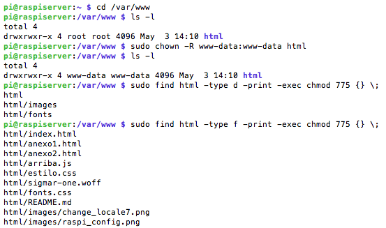
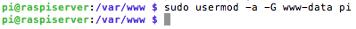
En los sistemas basados en Debian y derivados, toda la configuración de Apache se encuentra dentro del directorio /etc/apache2/.La configuración global del servidor se encuentra en el archivo apache2.conf. Generalmente, en los sistemas Debian no debe tocarse este archivo, ya que desde aquí se incluyen todos los archivos que poseen las configuraciones personalizadas.
El archivo envvars posee la configuración de variables de entorno utilizadas por Apache, por ejemplo usuario y grupo con el que corre el servidor, directorios para guardar PIDs, locks, logs, etc., y configuración de idioma (Locale). En la mayoría de los casos, este archivo tampoco debe modificarse.
El archivo ports.conf define las direcciones IP y puertos en los cuales Apache acepta peticiones. Este archivo es muy importante y debe modificarse adecuadamente, por ejemplo para permitir múltiples certificados SSL en una misma dirección IP.
Luego existen dos pares de directorios muy interesantes, que ordenan de manera brillante las configuraciones personalizadas del servidor Apache:
Las configuraciones para todos los módulos y todos sitios se encuentran en los directorios *-available/. Debian determina qué módulos y sitios están habilitados creando links simbólicos en sendos directorios *-enabled/. De esta forma, los directorios mods-available/ y sites-available/ contienen las configuraciones de módulos y sitios respectivamente, mientras que los directorios mods-enabled/ y sites-enabled/ enlazan a las configuraciones (localizadas en mods-available/ y sites-available/ respectivamente) de los módulos/sitios habilitados.
Para no tener que gestionar enlaces simbólicos manualmente, el paquete apache2 provee los siguientes comandos:
Ejemplos:
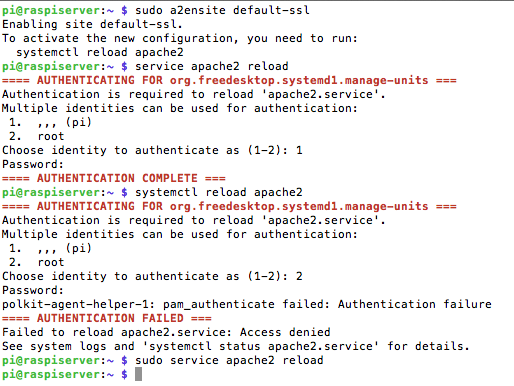
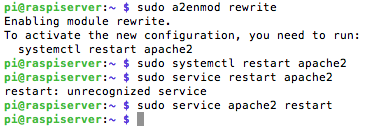
Cuando se habilita/deshabilita un módulo es necesario reiniciar el servidor, mientras que cuando se habilita/deshabilita un sitio sólo es necesario recargar la configuración de Apache. Para el arranque y para del servicio se usan los siguientes comandos: $ sudo service apache2 start | stop | status | restart | reload (se puede usar systemctl).
También dispone de un script de arranque y de parada en la carpeta /etc/init.d/ y que se puede ejecutar con la orden $ sudo /etc/init.d/apache2 restart | stop.
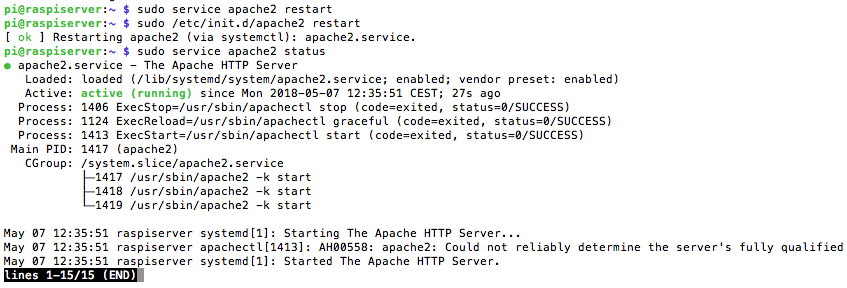
Si se desea listar los módulos de Apache cargados se debe recurrir al comando apache2ctl. Los módulos de Apache se instalan en el directorio /usr/lib/apache2/modules/. El comando apache2ctl posee además funcionalidades para visualizar el estado del servidor, a través de los subcomandos status y fullstatus.
Apache incluye la configuración de un sitio Web por defecto llamado "default". Su configuración se encuentra en el archivo 000-default.conf:
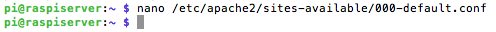
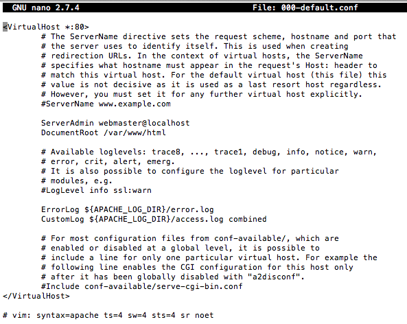
En esta configuración simple se define un sitio genérico que resuelve en todas las direcciones IP en las que atienda el servidor Web, en el puerto 80. La raíz del sitio Web se encuentra en el directorio /var/www/, y los logs de accesos y errores se almacenan en los archivos /var/log/apache2/access.log y /var/log/apache2/error.log respectivamente.
Por seguridad, es recomendable deshabilitar el sitio Web por defecto y definir uno específico para cada sitio que se hospedará en el servidor.
Por lo general un servidor Web hospedará uno o varios dominios de Internet, por ejemplo www.raspberryasir.com. Para mantener el esquema ordenado y prolijo propuesto por Debian, se recomienda que cada sitio a hospedar en el servidor se configure en su propio archivo, dentro del directorio /etc/apache2/sites-available/. Por ejemplo, si se desea hospedar el sitio Web correspondiente al dominio "www.raspberryasir.com", se puede crear un archivo llamado raspberryasir.conf o similar:
$ sudo nano /etc/apache2/sites-available/raspberryasir.conf
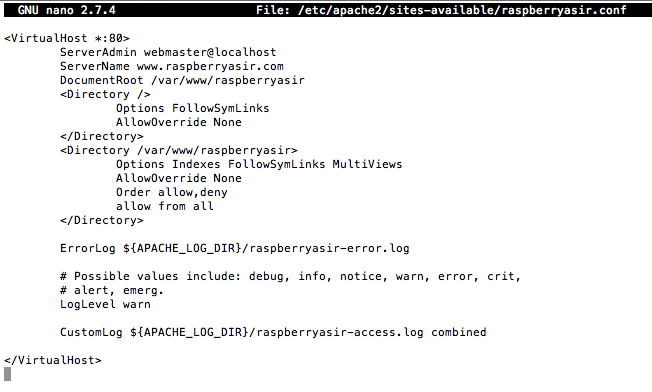
La raíz del sitio se alojará en el directorio raspberryasir/, por ende es necesario crearlo:
$ mkdir /var/www/raspberryasir
Los logs de acceso y errores se separan del sitio por defecto, para poder identificar a qué sitio corresponde cada acceso. Una vez creado el sitio, solo basta habilitarlo y recargar la configuración de Apache:
$ sudo a2ensite raspberryasir
$ sudo service apache2 reload
El comando a2ensite permite omitir la extensión .conf al indicar la configuración de un sitio.
Como administrador de un servidor Apache, hay momentos en los que hay que copiar a dicho servidor un archivo o archivos desde otras ubicaciones. Hay varias opciones para hacer esto. La primera es abrir un cliente FTP como puede ser Filezilla. La segunda es copiar los archivos por consola haciendo uso del comando SCP (Secure Copy) que está disponible tanto en Linux como en Mac, para los usuarios de Windows, mediante WinSCP se puede hacer lo mismo.
SCP hace uso de SSH (Secure Shell) para hacer copias seguras y encriptadas a través de la consola. Por ejemplo, para subir una carpeta al servidor, con un comando es suficiente y no es necesito abrir Filezilla.
Uso de SCP:
Lo primero es tener claro los parámetros de los que consta la instrucción:
Copiar archivos de local a servidor:
Si la idea es subir el archivo archivo.txt de un ordenador personal a la carpeta /home/usuario del servidor, se ejecuta la siguiente orden:
$ scp archivo.txt usuario@ip_servidor:/home/usuario
Copiar archivos de servidor a local:
Para realizar la operación inversa, es decir, copiar el fichero archivo.txt del servidor al equipo local en la carpeta Documentos, se hace lo siguiente:
$ scp usuario@ip_servidor:/home/usuario/archivo.txt Documentos
Copiar un directorio completo:
Esta opción es importante tenerla clara, ya que se va a usar muy a menudo, por ejemplo para poder copiar el directorio donde se aloja el espacio web en local en el servidor.Para copiar un directorio completo de local al servidor, por ejemplo /home/nacho/carpeta a /home/usuario, se añade la opción -r en el comando:
$ scp -r /home/nacho/carpeta usuario@ip_servidor:/home/usuario
PHP es un preprocesador que se ejecuta en el servidor cuando éste recibe la petición de una página web. Se ejecuta y envía la página al servidor web para que éste la sirva. A diferencia del HTML que es estático, PHP puede mostrar contenido distinto en base a distintas circunstancias, con lo que es utilizado por las aplicaciones de tipo CMS (como puede ser Wordpress o Drupal).
Para instalar PHP y los correspondientes paquetes para Apache, ejecutaremos el siguiente comando:
$ sudo apt-get install php7.0
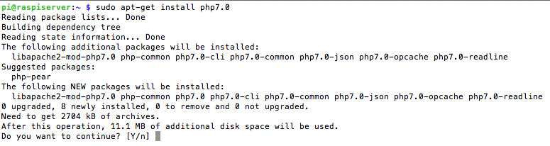
Se reinicia el servidor $ sudo service apache2 restart y para comprobar que PHP se ejecuta correctamente, se puede crear un archivo de prueba ejecutando $ sudo nano /var/www/html/test.php (o en el directorio donde esté definido el sitio web), se le añade el siguiente contenido, se guarda y se ejecuta en un navegador web:
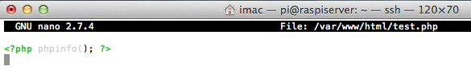
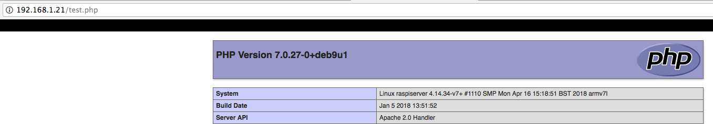
Una vez se ha comprobado su funcionamiento, es conveniente eliminarlo ya que la información que contiene puede comprometer la seguridad del servidor, $ sudo rm /var/www/html/test.php
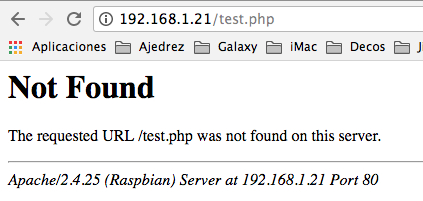
Para cambiar las opciones de PHP, se puede editar el archivo php.ini que en debian Stretch, esta en el siguiente directorio:
$ sudo nano /etc/php/7.0/apache2/php.ini
MariaDB es un gestor de base de datos muy popular. Del mismo modo que sucede con PHP, su gran presencia en los servidores web ha aumentado su popularidad ya que muchas de las aplicaciones que se instalarán en el servidor requieren como soporte a una base de datos.
Importante: MariaDB es ahora la variante de MySQL por omisión en Debian, en su versión 10.1. hay que tener en cuenta que los formatos de fichero de datos binarios no son compatibles hacia atrás. Por ello, una vez se haya actualizado a MariaDB 10.1 no se podrá volver a una versión anterior de MariaDB o de MySQL salvo que se tenga un backup de la base de datos.
Nota:Por omisión, la instalación de MariaDB sólo acepta conexiones a partir del propio host (localhost). Esto no es problemático porque la base de datos sólo será utilizada por aplicaciones del propio host.
Para instalar MariaDB ejecutaremos la siguiente línea de comando en el terminal: $ sudo apt-get install mariadb-server php7.0-mysql
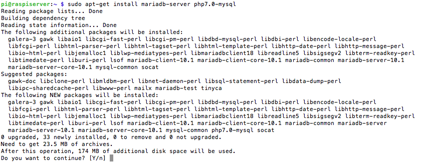
La instalación del paquete MariaDB no pide contraseña para el usuario root, una vez que las conexiones a la base de dados a partir del puesto local son consideradas como seguras. Terminada la instalación, se debe ejecutar el comando $ sudo mysql_secure_installation, que hace una serie de verificaciones y cambios en la configuración para garantizar la seguridad del servidor mysql.
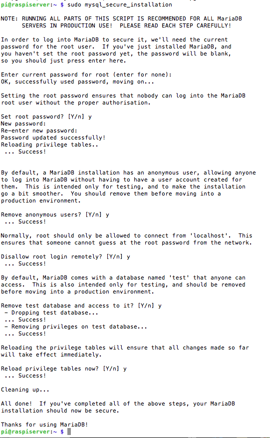
A partir de este momento ya es posible acceder al monitor de mysql/mariaDB ejecutando cualquiera de los dos comandos $ sudo mysql o $ sudo mariadb
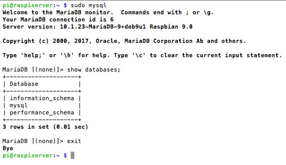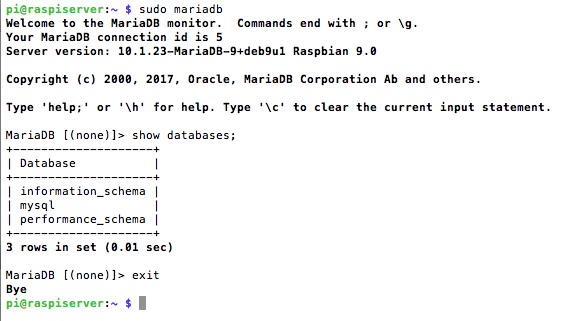
A modo de ejemplo y sin que sirva como datos de una configuración válida, se crea la base de datos “prueba” y el usuario “pruebausuario” con clave “123456” para trabajar. Se ejecutan las siguientes órdenes en la linea de comandos:
$ sudo mariadb
> create database prueba;
> grant all privileges on prueba.* to 'pruebausuario'@'localhost' identified by '123456';
> show databases;
> exit
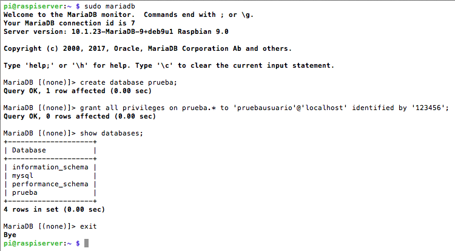
phpMyAdmin es una aplicación PHP que permite gestionar servidores de bases de datos MySQL o MariaDB desde cualquier navegador Web. Es una herramienta ideal para permitir a desarrolladores el acceso y creación de bases de datos para una aplicación Web, ya que provee una vista conveniente y práctica a un motor de bases de datos MySQL, especialmente a aquellos usuarios no familiarizados con el cliente de línea de comandos mysql. Es el complemento ideal para el servidor LAMP.
Una de las grandes ventajas desde el punto de vista de la seguridad, es que phpMyAdmin evita tener que dar acceso a una shell en el servidor a los desarrolladores para que utilicen el cliente mysql de manera local, o tener que habilitar el acceso remoto al servidor MySQL para que los desarrolladores puedan conectarse utilizando un cliente desde el exterior. Siempre claro, que se proteja adecuadamente el acceso a phpMyAdmin, por ejemplo utilizando autenticación Digest como capa de seguridad adicional.
Antes de instalar phpMyAdmin es necesario contar con un servidor LAMP (Linux+Apache+MySQL+PHP) instalado y funcionando. Para instalar phpmyadmin, simplemente ejecutar $ sudo apt-get install phpmyadmin
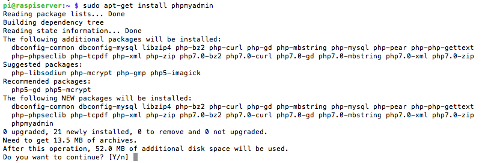
Durante la instalación, hay que seleccionar qué servidor web configurar, con la barra espaciadora se selecciona Apache2 y se pulsa Intro para confirmar y continuar:
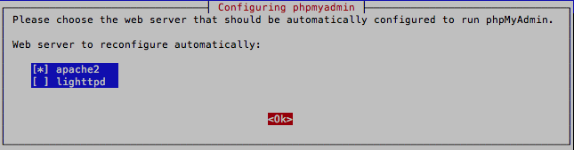
En la siguiente pantalla, hay que seleccionar SÍ para configurar una base de datos para phpMyAdmin con dbconfig-common:
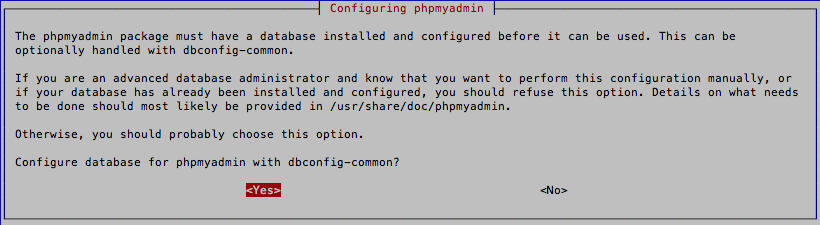
y finalmente se establece una contraseña para el usuario ‘phpmyadmin’ en MySQL:
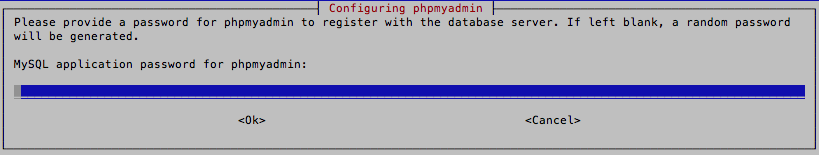
Con este paso, se completa la instalación de phpMyAdmin. Ahora ya se puede acceder a ella en http://ip_servidor/phpmyadmin e iniciar sesión con el nombre de usuario 'phpmyadmin' y contraseña 'la que se haya puesto en la instalación' de MySQL.
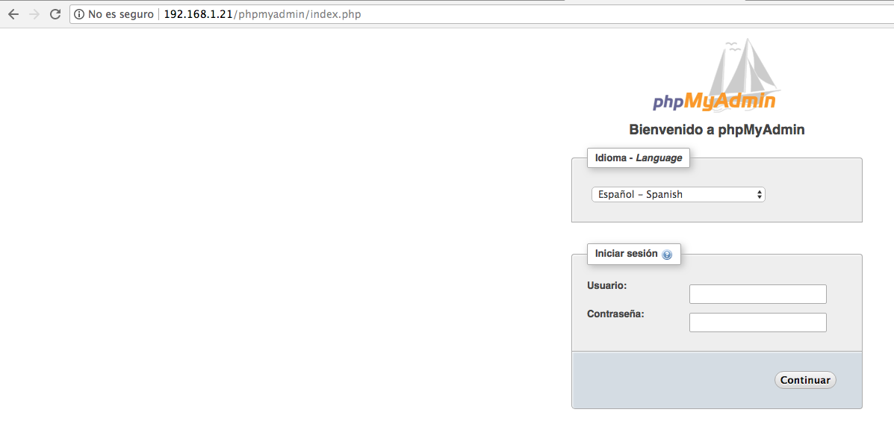
Es altamente recomendable modificar el alias por defecto, para evadir intentos de acceso de robots. Para ello, editar la configuración de Apache que provee phpMyAdmin, ejecutando $ sudo nano /etc/phpmyadmin/apache.conf y donde pone:
# phpMyAdmin default Apache configuration
Alias /phpmyadmin /usr/share/phpmyadmin
Cambiar el alias "/phpmyadmin" por uno personalizado, por ejemplo: "/mama":
# phpMyAdmin default Apache configuration
Alias /mama /usr/share/phpmyadmin
Finalmente reiniciar Apache:
$ sudo service apache2 restart
Comprobar el funcionamiento accediendo a la URL "/mama":
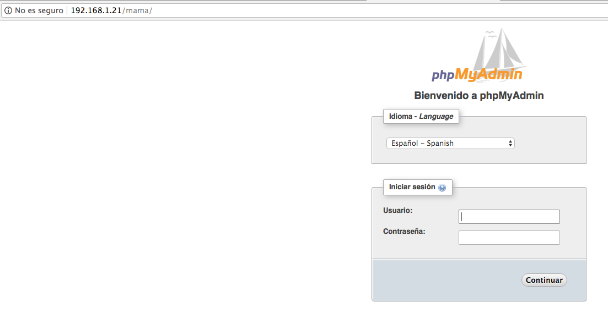
Históricamente phpMyAdmin ha tenido diferentes vulnerabilidades que han sido parcheadas. Siendo una aplicación que da acceso a un componente tan crítico como es el motor de bases de datos, es indispensable proteger el acceso a la misma utilizando una capa extra de seguridad, por ejemplo autenticación Digest. Editar el archivo /etc/phpmyadmin/apache.conf y seguir los pasos sobre autenticación Digest que indica el artículo Configurar autenticación Digest en Apache y mostrar directorios protegidos en índices.
Jamás usar el usuario "root" para que las aplicaciones y/o desarrolladores accedan a sus bases de datos. Para cada sitio Web, crear un usuario MySQL único que tenga los mínimos privilegios de acceso necesarios a su base de datos (por ejemplo SELECT, INSERT, UPDATE y DELETE). Luego para cada desarrollador, crear un usuario con los privilegios suficientes para crear y gestionar bases de datos de los sitios sobre los que trabaja (por ejemplo SELECT, INSERT, UPDATE, DELETE, CREATE, ALTER, INDEX, DROP, etc.).
Esta página forma parte del proyecto Mini servidor para prácticas ASIR por Nacho López Espert